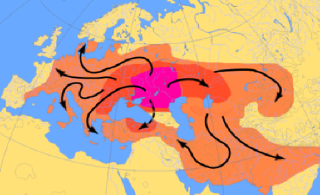
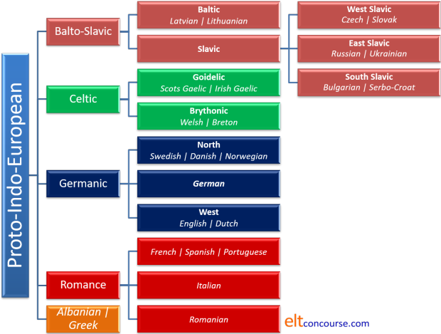
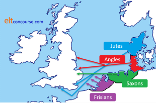
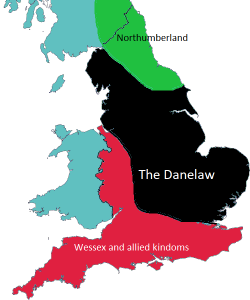
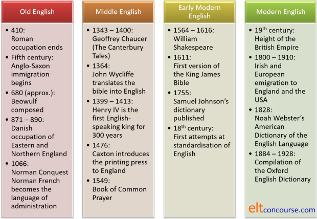
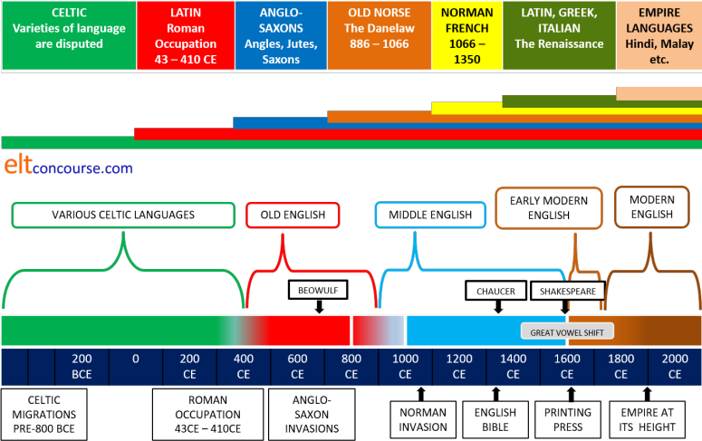
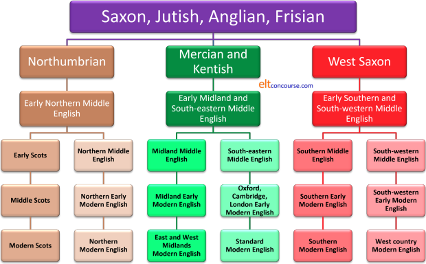

The roots of English

Lots of people have made successful academic careers out of the study of the history of English. This brief guide is not in that league.
Here's a contents list if you are looking for something in
particular.
Clicking on -top- at the end of each section will
bring you back to this menu.
 |
Why is this important? |
It isn't, of course, for day-to-day teaching but if you or your
students are interested in the sources of the language you are
teaching and they are learning, it is helpful to know where things
come from.
For you, too, as a language professional, knowing something about
the history and development of your subject is helpful and, some
find, interesting and revealing.
It will also help to explain some of the less
obvious areas of the structure and lexis of the language and may
even help learners to notice affinities between their first
language(s) and English.
It is unsurprising that many learners of English are actually quite
interested in the history and development of the language they are
learning and they expect their teachers to be knowledgeable in the
area.
The language family |
English is an Indo-European language. Although this is a
debatable issue, this family of languages may have originated in the
area of Asia just to the north and west of the Caspian Sea, between
it and the Black Sea, in what is now south Kazakhstan.
Other theories place the origins of the Indo-European family over
6000 years ago in the Eastern Mediterranean area once home to the
Hittite civilization. This is the so-called Anatolian
hypothesis.
Modern genetic studies are beginning to indicate that the language
family originated with the Yamnaya people who migrated out of the
Asian steppes some 4500 years ago, carrying their language with them
(along with the wheel and their domesticated horses).
Estimates by Reich (2018: 116) suggest that 90% of the erstwhile
population of Britain, for example, was replaced by people of
Yamnaya heritage around that time.
There are around 400 languages in the group, spoken in total by over
3 billion people. The
source of all these languages is known as Proto-Indo-European or PIE.
Here's the map of the first presumed expansion of PIE from its homeland:

Source: Wikipedia
Here's a bigger picture:

Indo-European languages include many now spoken in the south and
east of that area, which include the Persian languages Sanskrit (now extinct but
influential),
Hindi, Punjabi and many others,
but we are concerned here with the development of English so we'll focus on the western
groups of languages.
Here's the family tree, much simplified and with fewer examples of
the languages than you will find in more academic texts.
Extinct languages are not included here.

We are talking here about very ancient relationships and languages grow, develop and change. The origins of PIE are obscure but linguistic and genetic studies are beginning to converge on a date around 6000 years BCE (Before Common Era). A lot can happen in 8000 years.
As you see, there are 5 main branches of western PIE and English belongs to one of them, the West Germanic group which includes Dutch, Flemish and Afrikaans as well as Frisian (its closest relative).
There are dissenters to this view, notably, but not solely,
Embley & Faarlund (2014) who present substantial evidence that
English is more closely descended from North Germanic (i.e., early
Norse) then West Germanic. The view is based on a number of
syntactical as well as lexical data.
Others see the influence of North Germanic varieties as mostly
transpiring from close contacts for trade and other purposes, not
least warfare between the English and the Norse invaders / settlers
in England. There's a little more below on this.
Some analyses will
differ in minor respects, for example, separating Greek and Albanian
or sub-dividing Slavic languages differently as well as including
Modern German as a West Germanic language, descending from the now
extinct Old High German. By that analysis, English and the
other West Germanic languages descend from Low German. Frisian
itself, a language spoken today by around 500,000 people, is the
closest relative to English and has two main branches: West Frisian, spoken in The Netherlands and East Frisian,
spoken in parts of Germany and Denmark. There is also Saterland
Frisian, a remnant of a previously widely-spoken dialect. The
modern dialects of Frisian are not mutually comprehensible. Old Frisian and Old
English were so closely related that their speakers were almost
certainly mutually comprehensible. That is no longer the case
for the modern forms of these languages.
None of this detail matters for what follows. Even today,
however, speakers of the English dialects prevalent in North-East
England find that they can (more or less) understand some Modern
Frisian speech.
Another, more
complex and inclusive, family-tree diagram is in the guide to types of languages,
linked below in the list of related guides.
English grammar, syntax and the lexicon bear witness to its close
affinity with other Germanic languages as can easily be seen from
the very large numbers of closely similar structures and words in the
languages.
In other words, the grammar of English and its basic lexicon remain
identifiably Germanic. Here's an example of what is meant.
The right-hand column (French) is there for comparison so the
differences are clear.
The French words for basic concepts and some key functional words
bear no resemblance to the other sets, rarely, for example, even
sharing a single sound.
| English | Frisian | German | Dutch | French |
| land | lân | Land | land | terre |
| house | hûs | Haus | huis | maison |
| sun | sinne | Sonne | zon | soleil |
| go | gean | gehen | gaan | aller |
| speak | sprekke | sprechen | spreken | parlez |
| in | yn | in | in | dans |
| before | foar | vor | voordat | avant |
| she | sy | sie | ze | elle |
In terms of the grammar of the languages in that table there are
clearly identifiable similarities and, as an example, we can
consider how four simple clauses are formed across these languages
and again, we will use French to show the contrast.
It looks like this:
| English | Frisian | German | Dutch | French |
| Can you come? | Kinsto komme? | Kannst du kommen? | Kun je komen? | Peux-tu venir? |
| That is better | Dat is better | Das ist besser | Dat is beter | C'est mieux |
| He is my brother | Hy is myn broer | Er ist mein Bruder | Hij is mijn broer | C'est mon frère |
| She is the sister of my mother | Se is de suster fan myn mem | Sie ist die Schwester meiner Mutter | Ze is de zus van mijn moeder | C'est la soeur de ma mère |
We shall re-visit the evidence for the basic lexicon and grammatical structures of English being maintained even after the Norman invasion of the 11th century later in this guide.
 |
The Roman occupation of a Celtic-speaking land |
When the Romans arrived in Britain in 43 CE, they encountered
people who spoke a range of Celtic languages, as people did across
huge swathes of Europe from the Black Sea to the Atlantic coast.
When the occupation ended in 410 CE, they left much the same people
speaking much the same range of Celtic languages.
Only a handful of Latin lexemes survived the Anglo-Saxon invasion
which followed and it is not always easy to discern whether the
Latin words had already been borrowed into the languages spoken by
the later invaders.
It is noticeable, however, that although Latin, at least, Vulgar
Latin, clearly forms the basis of modern-day French, Spanish and
other Romance languages, it did not take root at all in Britain
despite it being a lingua franca throughout the empire.
A very few military and ecclesiastical words (the empire was Christianized
during the occupation) did manage to infiltrate the languages
spoken after the end of the occupation (including some still present
in place names, particularly -castle).
Overall, however, English would have to wait until much later for
its enrichment by Latin borrowings.
(There is some speculation concerning pre-Celtic culture in Britain and elsewhere in Europe with, for example, Basque being identified as clearly a non-Indo-European language and others which are surmised from fragments and inscriptions. There may even be some evidence from place-name research in Britain pointing to a pre-Celtic language or set of languages but no such language can be confidently identified and there are no traces in any form of English of any non-Indo-European language indigenous to Europe.)
Early English roots |
The country that is now England was the northernmost province of the Roman Empire until around 410 CE (Common Era). Shortly afterwards, migrations from the continent, not always peacefully intended or received, began:
- Angles
- from whose name the word for the language is derived, from Central Denmark who settled in Northern and Eastern England
- Saxons
- from Northern Germany who settled in Southern and Eastern England
- Jutes
- from Northern Denmark who settled in South-East England, mainly Kent and the Isle of Wight
Roughly, because the exact extent of the homelands and the role
of the Frisians is not wholly clear, the invasions looked like this:

These migrants brought with them a set of closely related and highly inflected languages which formed the basis of Old English. The first writing in a language identifiable as English dates from the seventh century.
By the ninth century, if not before, the original Britons, a
Celtic-speaking people, had been pushed northwards and westwards
and confined to what is now Scotland, Wales, the Isle of Man, the
extreme south west of England and the island of Ireland.
A very few Celtic words were borrowed by the invading Anglo-Saxon
speakers and even fewer have survived in Modern English.
The languages spoken at that time, under the umbrella term of
English were related but not always mutually comprehensible.
Northumbrian, spoken in the North West of England and southern
Scotland and related to the language spoken in East Anglia, Mercian, widely spoken from the Welsh border eastwards to
the western fringe of East Anglia, West Saxon, the language of Wessex in the South and South West of England and Kentish, spoken
in the South East of England, are all
distinguishable.
It is only by the tenth century with the writings of a
scholar-priest, Ælfric, that an identifiable early standard English
emerges. Even so, the majority of people travelled little and
continued to speak local dialects of English.
 |
Old English |
Old English can be dated to around the 5th to the 11th centuries and is almost impossible to understand for modern English speakers without a good deal of study.
It was a synthetic, highly inflected
language, or, as we saw above, a collection of related languages, in many ways similar to
Modern German with case endings,
complex verb declensions, a three-gender structure, article changes and so on. The great adventure story of
Beowulf (picture) was written in Old English sometime between the
8th and 11th centuries.
The language was written in both runes and, later, the Latin alphabet but
some of the letters were different. In particular, Old English
used three characters Modern English does not have: thorn (Þ, þ) and eth (ð, Ð) which
are both now rendered th and a vowel,
æ, known as ash (pronounced approximately as the 'a' in apple).
The upper-case version is Æ.
The modern letter g was written as ʒ and the
modern w as the runic
ƿ or wynn.
Other letters, such as 'j' are later, Middle English, introductions
from French and q, x and z are almost absent.
The earlier runic script is assumed to be the so-called futhorc
script named after the Old English pronunciation of the first six
runes in the alphabet. They were: ᚠ ᚢ ᚦ ᚩ ᚱ ᚳ.
The Latin alphabet mostly replaced the uses of runic script after
the conversion to Christianity starting around the end of the sixth
century.
The pronunciation of Old English
is, of course, somewhat speculative but it was certainly very
different from what we hear today.
Here's an example of the written form, taken from the Anglo-Saxon
Chronicle, a history probably compiled in the reign of Alfred the
Great (849-899, reigned 871-899).
| Original text | Translation |
| Anno 449. Her Martianus and Valentinus onfengon rice, and ricsodon seofon winter. And on hiera dagum Hengest and Horsa, fram Wyrtgeorne gelaþode, Bretta cyninge, gesohton Bretene on þæm stede þe is genemned Ypwines-fleot, ærest Brettum to fultume, ac hie eft on hie fuhton. | Anno 449. In this year Martianus and Valentinus succeeded to kingship, and ruled seven years. And in their days Hengest and Horsa, invited by Vortigern, king of Britons, came to Britain at the place which is called Ebbsfleet, first as a help to Britons, but they afterwards fought against them. |
Source: https://www.arts.gla.ac.uk/stella/readings/OE/anglo_chron.htm
A noticeable characteristic of Old English which Modern English and other Germanic languages have retained is the knack of compounding to produce new meanings. In Old English many of the compounds are poetic and evocative. They include, for example:
| Modern word | Old English compound | Literal translation |
| battle | billġeslieht | sword-slaughter |
| hell | dēaþsele | death-hall |
| war | ecghete | sword-hate |
| killer | feorhbana | life-bane |
| body | feorhhūs | life-house |
| sea | hwælweġ | whale-way |
Many more words in Old English were formed by compounding than is
the case in later forms of the language and many were poetic
coinages used only once but immediately comprehensible to an
audience primed to understand poetic compounds.
In later years, during the 18th and 19th centuries in particular,
some romantics tried to revive Old English forms as replacements for
what they saw as invading Latin-based terms but with little
success.
The really big change in English |
The history of English, conventionally divided into three periods –
Old, Middle and Early Modern –
is one of the gradual loss of
inflexion,
gender and case and a slow
transition to an uninflected and simplified structure.
In other words, the language has moved from being synthetic
(i.e., having lots of endings and other affixes to signal case,
number, person, gender, tense and so on like Modern German, Russian, Greek,
French and Italian) to being analytic (i.e., having
few such characteristics and preferring one morpheme to represent
one idea). Here is an example to make things clear(er):
In Modern German, the past form of go has the root ging (from the infinitive gehen). The way to say you went is du gingst. The -st ending on the verb shows:
- It is singular
- It is familiar rather than polite
- It is in the second person
The -st ending on a verb form will be familiar to anyone who has read the King James Bible or Shakespeare's plays because both use the ending to denote the second person singular familiar form of the verb. Thou hast, of course, read Shakespeare, hast thou not?
Similar things to German happen in other synthetic languages, like this, e.g., for the past tense:
| English | Greek | Croatian | Czech | Welsh | Icelandic | German | Old English |
| I went | πήγε [peeghe] | otišao je | šel | aeth | hann fór | ich ginge | ic gewát |
| you went | πηγες [peeges] | što je otišao | jste šel | aethoch | þú fórst | du gingst | þu gewite |
| they went | πήγαν [peeghan] | otišli su | šli | aethant | þeir fóru | sie gingen | hīe gewiton |
In Modern English, by contrast to the other six language examples
and Old English, the past form of go is
went and it is unchanged for all numbers and persons: I
went, you went, she went, he went, it went, we went, they went.
Here, the only change signalled by the form of the verb is tense.
Modern English is at the analytic end of the spectrum, therefore,
but many other Indo-European languages along with Old English are
clearly at the synthetic end.
If you are wondering why the past tense of go is so
irregular, the answer is that the present form of the verb is
derived from the Old English gan, which shares the root of
the German gehen, the Dutch gaan, the Swedish
gå and so on.
The past tense comes to us by a different root and is derived from
the Old English verb wend (as in wend one's way).
The past of wend was went and that became the
standard past-tense form of go with a new weak, or regular,
past tense for wend of wended.
Modern English is not fully analytic because it still retains some
inflexions such as the third-person -s ending for present-simple verb
forms (she smokes) and the plural
-s as well as some changes in pronouns (I, me, my,
mine, he, him, his etc.). We also denote past tenses with
either the -ed / -d ending or by making changes to the
vowels in verbs. It is, however, much more analytic than most other Indo-European
languages.
Some languages, such as Mandarin, are even more analytic and usually
referred to as isolating languages.
Similar considerations apply to determiners, nouns and adjectives because in
Old English there were a number of endings on articles, nouns and their
associated adjectives to signal number, gender and case (often object or
subject case but there are other possibilities).
In Old English, for example, the mistress of a household was
expressed as hlǣfdīġe but if the word is used as the object
of the verb rather than the subject, it changes its ending to
hlǣfdīġan to reflect the changed grammatical status. Like
Modern German, Old English had four cases for nouns: nominative (the
subject), accusative (the object), genitive (the possessive) and
dative (denoting movement to and from, usually, as well as
identifying the indirect rather than direct object).
Old English also had three genders: masculine, feminine and neuter
and adjective endings as well as the form of articles reflected the
gender of the noun.
In the end, what this change from an inflected to a more or less
analytic language has done is to fix the word order in English as
Subject–Verb–Object without which, we cannot understand the
difference between:
The dog chased the cat
and
The cat chased the dog
The difference would have been clear to an Old English speaker, whatever the
ordering of the words, because in the first case, the word for
dog would have been docga and in the second case, as
the object, it would have been docgan.
 |
Pronouns in Old English: an example of loss of inflexion, gender and case |
The most obvious effect of the loss of case and inflexion over the centuries is the pronoun system of Modern English compared to that of Old English. If you are unsure about what cases are, here's a brief description for the purposes of understanding Old English (and Modern German, incidentally, along with a good number of other inflecting languages).
- Nominative case
- = the subject of the verb (She went)
- Accusative case
- = the direct object of the verb (She broke it)
- Dative case
- = the indirect object or the complement of a preposition (She gave them a book, It is on the table)
- Genitive case
- = the possessive (It's her book)
You will see from this table (which is not complete) that Old
English had a separate way of signalling two people as distinct from
singular and plural. This dual person disappeared over the
centuries and is only just discernible in Modern English in remnants
such as the pronouns both, neither and either.
Here is what is meant:
| First person | ||||
| Case | Singular | Dual | Plural | Modern English |
| Nominative | ic | wit | we | I, we |
| Accusative | mec or me | uncit or unc | usic or us | me, us |
| Dative | me | unc | us | me, us |
| Genitive | min | uncer | user or ure | mine, ours |
| Second person | ||||
| Case | Singular | Dual | Plural | Modern English |
| Nominative | þu | git | ge | you |
| Accusative | þec or þe | incit or inc | eowic or eow | you |
| Dative | þe | inc | eow | you |
| Genitive | þin | incer | eower | yours |
| Third person | |||||
| Case | Masculine | Feminine | Neuter | Plural | Modern English |
| Nominative | he | heo or hie | hit | heo or hie | he, she, it, they |
| Accusative | hine | heo or hie | hit | heo or hie | him, her, it, them |
| Dative | him | hire | him | him or heom | him, her, it, them |
| Genitive | his | hire | his | hira | his, hers, its, theirs |
Incidentally, a great puzzle for historical philologists is the emergence of the pronoun she for which a number of conflicting theories have been offered with none being universally accepted.
For more, see
the guide to types of languages, linked below in the list of related
guides.
There is also a guide to case linked from the list of related guides
at the end.
 |
Scandinavian influences |
We have noted above that there are scholars who consider that English is better classified as a North Germanic language rather than the usual categorisation which assumes that it is West Germanic (and closely akin to Frisian). Evidence for this is suggested both by syntactical and lexical data (Embley & Faarlund, 2014).
Others suggest, as we do here, that influences are less
derivational and more social and trading based.
We noted above that by the ninth century, the original Britons had been pushed northwards and westwards
to Scotland, Wales and the island of Ireland by Anglo-Saxon invaders.However, the Anglo-Saxons did not have it all their own way, of course.
The first recorded Scandinavian raids, remembered today as Viking
raids, occurred in 793. From the end of the eighth century and continuing for 200 years,
raiders, then settlers from Scandinavia occupied virtually the whole
of the east and north of England with the Saxon kingdoms confined to
the south and west. Northumberland in the north, which
stretched into what is today Scotland, remained English. The
invaders spoke another range of northern rather then western
Germanic languages, of various levels of mutual comprehensibility,
known collectively as Old Norse. The two major dialects were
East and West Old Norse and invaders and settlers from the coasts of
modern-day Norway, speaking West Old Norse influenced the littoral
areas to the north of Scotland, north-west England and parts of
Wales and Ireland. Speakers of East Old Norse, from what is
today Sweden had more widespread influence in eastern England and,
incidentally in Normandy (of which more later). The eastern
dialects of Old Norse retained some mutual comprehensibility with
continental west Germanic languages.
The area under Norse control, known as The Danelaw comprised
virtually the whole of England from the Scottish border to London to
the east of a line drawn diagonally from Liverpool to London.
Very roughly the picture looked like this with the blue areas to the
west and north remaining Celtic speaking:

Norse languages influenced the development of English within
and beyond the confines of The Danelaw with
hundreds of common words dating from the ninth to the eleventh
centuries being introduced into English. They include at
least:
| anger are bag bait band bark bend birth blend bread cake |
call cast clip crawl cut die dirt dregs egg fellow flat |
fog gap gasp get give glitter glove haggle happy hit husband |
ill keel kid knife knot leg lift likely link loan loft |
loose low meek mistake odd outlaw plough race raft raise ransack |
rid root rotten run sale scant scare scrap scrape seat seem |
sister skill skin skirt sky slaughter sly snare sprint steak take |
thrift thrive thrust tidings trust ugly want weak window wing wrong |
Additionally, all the names of the days of the week in English
have cognates in Old Norse.
It is, in fact, not always clear whether a word is altered in Old
English under the influence of Old Norse or derived directly from
it. Both languages stem from the same Proto-Germanic source so
many words were already quite similar in the two languages.
It is also the case that the same people and their languages
influenced Norman French, of which more later, but to a lesser
degree. The Viking invaders were first granted land in
Normandy in 911 and the colony expanded over the following decades
to encompass much of Brittany. Here, however, the Norse
language did not persist and, apart from place names, little
remained by the time of the Norman invasion of English in 1066
(Parker, 2013:330).
Place names derived from Norse languages are common in the north of England where names ending in -by, -thorpe and -thwaite occur very regularly. The suffix thorpe translates as village, by as town, farm or settlement and thwaite as clearing or cleared land. Other parts of place names such as holm (small island), wick (bay) and dale (valley) are also common in the north and east of England to this day.
(It is sometimes imagined that Norse languages did not persist for long in Britain after the end of the Viking period (variously dated but conventionally to the Battle of Hastings in 1066). However, Old Norse (or a dialect thereof referred to as Norn) survived as a living language in Ireland until the 13th century, on the Isle of Man until possibly as late as 1500, in Scotland, Orkney and Shetland until perhaps the middle of the 19th century.)
It has also been suggested that the fact that English developed
from a heavily inflected synthetic language to a much more
analytical one is attributable, in part at least, to the influence
of Old Norse. In particular, apart from the kinds of borrowing
listed above, structural words, such as pronouns, prepositions,
conjunctions and modal auxiliary verbs show a good deal of
Scandinavian influence. This has led some to assert that the
structure of Old English became simplified because of the need to
find a language mutually comprehensible to both the English and the
Norse invaders, later settlers and traders. On the other hand, because both Old Norse and
Old English shared a common Germanic ancestry, many of these
structural words were already very similar, often identical.
Old Norse did not, for example, distinguish gender in the form of
all pronouns and determiners, although it did distinguish singular,
dual and plural (as did Old English).
Additionally, and slightly more persuasively, Old Norse and Old
English shared many items in their lexicons which differed only in
the complex inflexions found in Old English. The pressure,
within The Danelaw at least, to simplify for the sake of easy
communication must have been quite strong.
 |
Celtic influences |
Even today, Celtic influences on English have been underestimated or dismissed as sporadic and peripheral and there is no doubt that compared, say, to the influences of Norman French, considered next, the contribution of Celtic languages to Modern English is small, although it is not at all negligible.
Celtic languages were once dominant across most of Europe, spoken
from central modern Turkey, across modern-day Bulgaria, Romania,
Hungary, Poland, Germany, The Netherlands, Belgium, France,
Switzerland, northern Italy, Spain and Portugal as well as the
modern nations of the British Isles.. Nowadays, the evidence
of Celtic influences is most apparent in place names. Most of
France's main cities have names which derive from Celtic languages
(Gaulish in most cases) and the same is true for a large number of
place names in Germany, The Netherlands, Spain and
so on across many major and minor European states.
Many place names in The British Isles can be traced to Celtic words
for hills, rivers, woods and so on, among them Avon,
Axminster, Brentford, Devon, Dover, Leatherhead and literally
hundreds more.
When we get away from toponymy, the evidence is somewhat less obvious, a phenomenon which may, at least in part, be due to the disparagement with which many early scholars treated the notion of Celtic influences on Modern English. In fact, there were two phases of influence:
- When invaders from Europe arrived in the 5th century and for
some time later, many Celts were forced to emigrate to the
western and northern fringes of Britain where the influence of
Celtic languages is still strong: Welsh, Scots Gaelic and, to
some extent, Cornish and Manx, for example. The large
numbers of place names which survive from those times are still
evident but some English words dating from this period have clear Celtic
origins (from Irish, Welsh or Scots, mostly). Among them
are probably:
Other words of Celtic origin may have arrived via Norman French which was itself influenced by the Celtic language spoken in France, Gaulish.adder
ass
beak
ben
bardbow
cadge
coracle
cog
corgicoombe
crumpet
crag
doe
gulliron
lawn
flannel
slob
trousers - During the 16th to 19th centuries many Celtic speakers
moved into cities in England, especially but not exclusively, to
London. Some of the words cited above may have first
appeared at this time (written records are unreliable guides)
but it has been argued that some peculiarities of English
grammar certainly date from this time and that it is no
coincidence that these peculiarities also appear in Celtic
languages.
Most other European languages make do with a single verb form to denote the simple and progressive aspects in English. For example, I go and I am going both translate into French as je vais, into German as ich gehe, in Spanish as voy, in Estonian, ma lähen, in Danish, jeg går, in Romanian mă duc, in Italian vado, in Czech, jdu and so on across almost all European languages. Some Slavic languages do distinguish between the two aspects but they are unlikely to be the source of much influence on the development of English. Even Basque, a non-Indo-European language, makes no distinction (the two clauses both translate as banoa).
However, Celtic languages all make a distinction between three aspects of the verb which may be translated as I go, I am going and I habitually go. In Irish, for example, I go translates as téim but I am going as tá mé ag dul. In Scots Gaelic we find:
I go → téighim
I am going →tá ag dul
I (regularly) go → bím ag dul
(Todd & Hancock 1986:105)
According to many authorities, the progressive aspect was not commonly found in English until the early 17th century, and it follows, for some, that the innovation is influenced by Celtic languages. Celtic languages may, in fact, not be the sole source of this innovation but they are almost certainly a reinforcing factor at the very least.
 |
The Conquest |
A date every British school child is familiar with, if they are
familiar with any at all, is 1066, the year of the Norman Conquest
of England.
Unusually for that period of history, the Battle of Hastings (Senlac
Hill, to be precise) was
decisive: the English King, Harold Godwinson, was killed and the Saxon
aristocracy almost wiped out.
Although the invaders spoke Norman French it should be recalled that
many were, in fact, of Scandinavian origin. Normandy itself
was settled, none too peaceably, by Norse-speaking Vikings from 911.
The people of the region are described as of mixed
Scandinavian-Frankish origins. Although apart from place names
in Normandy there are few obvious influences on Norman French from
Old Norse, whose speakers were never there in a majority.
However, the word Norman itself (from the Old French plural
Normanz) derives from the Norse nordmanni
(North-Men or Scandinavians) (Parker, 2014:276).
What followed was 300 years in which no ruler of England spoke
English as a first language (or at all). Although the Norman
conquerors never represented more than around 3% of the population,
they spoke French and that language, along with Latin, became the
language of administration, religion, the court and the land-holding
classes. It was the language of power. Naturally enough,
anybody with ambitions to rise in the social hierarchy also needed
to master French and so began a slow trickle-down of French into the
native aristocracy. Many of these people, the civil servants
of the day, were bilingual in English and French.
Especially in areas (i.e., registers) in which the aristocracy were
mostly concerned, French was hugely influential in terms of the
vocabulary of English. Predominately, the words introduced
from French, around 10,000 of them, occur in the following areas
(although almost no area was untouched):
- Warfare: peace, battle, arms, attack etc.
- The church: service, miracle, saint, sacrifice, clergy etc.
- Hunting: forest, quarry, falcon, retrieve etc.
- Architecture and houses: carpet, wardrobe, chair, table, joist, arch etc.
- Food: mutton, pork, gammon, onion, peach etc.
In many cases, the original English words were also retained so,
although we now commonly use the French-derived word archer,
the English bowman is still extant. By the same
token, the names for the animals, which the peasantry raised, were
retained and so we have the distinction in English between, for
example, beef, from the French word [boeuf] for
the meat, and cow, the
English word for the animal from which it comes which is a cognate
of the German Kuh and the Frisian ko. To refer to
food, the French word was used; for the animal whence it comes, the
English word was retained.
For the majority of the population, who continued to speak English,
exchanging an English lord for a French one probably had little
impact.
Not all the language was affected and the great mass of the population continued to speak English so the essentials of the language remained unchanged or developed very slowly. Words for kinship terms, father, mother, son, daughter etc., agricultural items, land, barn, field, hay etc., numerals and so on are still identifiably Anglo-Saxon in origin and most have cognate words in other Germanic languages which are instantly recognisable. Basic verb forms and very common nouns, too, remained virtually unaffected. For example, again with modern French as a contrast:
| English | German | Dutch | Swedish | Icelandic | Frisian | Old English | French |
| land | Land | land | landa | land | lân | land | terre |
| mother | Mutter | moeder | mor | móðir | mem | modor | mère |
| five | fünf | vij | fem | fimm | fiif | fif | cinq |
| milk | Milch | melk | mjölk | mjólk | molke | meolc | lait |
| have | haben | hebben | ha | hafa | hawwe | habban | avoir |
| see | sehen | zien | se | sjá | sjen | seon | voir |
| out | aus | uit | ut | út | út | út | dehors |
| in | in | in | i | í | yn | in | dans |
| mine | mein | mijn | mina | minn | myn | min | à moi |
| and | und | en | och | og | en | ond | et |
| so | so | zo | så | svo | sa | swá | donc |
Additionally, closed-class functional words (prepositions, pronouns, conjunctions and determiners) also resisted influences from French and remain Anglo-Saxon in origin and have recognisable cognates in most Germanic languages to this day as the final five rows above show.
Nevertheless, aside from many common and quite basic concepts, the vocabulary of Modern English contains only 15% of words cognate with or derived from Old English (Crystal, 1995:27). This is a slightly deceptive figure because the 15% contains many of the most frequently used words. Nearly all the 100 most common words in spoken English are derived from Anglo-Saxon with recognisable cognates in other Germanic languages.
However, although Norman French was hugely influential in terms of enriching the lexicon of English, the grammar and structure of the language was almost wholly unaffected. What happened was that the basic structure of Old English was retained with a very large leavening of Norman French lexemes. The technical term to describe this blending of languages is macaronic.
Later, long after the conquest, new influences from French, this time the French spoken in the Paris area rather than Normandy, begin to appear, especially during the thirteenth and fourteenth centuries. We'll come to that.
Middle English |
Middle English describes the language spoken from the 11th to the end of the 15th centuries. It is at this time that the language, or, rather, languages, began to take on some of the characteristics of Modern English with the loss of cases, inflexions and genders. It is also the time when the influence of Norman French is strikingly clear. This is the language of Chaucer (pictured, 1343-1400). Here are two examples with a translation:
| Original text | Translation |
| From Epitaph of John the smyth, died 1371 | |
| yis graue lẏs John ye smẏth god yif his soule hewn grit | under this grave lies John the smith, God give his soul heavenly peace |
| From Mankind, a medieval play written around 1470 | |
|
MERCY. The very fownder and begynner of owr fyrst creacyon Amonge ws synfull wrechys he oweth to be magnyfyde, þat for owr dysobedyenc he hade non indygnacyon To sende hys own son to be torn and crucyfyede. Owr obsequyouse seruyce to hym xulde be aplyede, Where he was lorde of all ... |
Mercy: The founder and beginner of our first creation among us sinful wretches he deserves to be magnified that for our disobedience he had no indignation to send his own son to be torn and crucified. Our obsequious service should to him be applied, where he was lord of all ... |
| Dialects of English in the time of Chaucer | |
 |
It is still true at this time that there was no standard English language. Chaucer, for example, spoke a dialect common in the central East Midlands. That dialect, because it encompassed Oxford, Cambridge and London (shown as the grey triangle) and was also centred in the rich farmlands of the east of England and East Anglia with its thriving sheep and wool industries, was the most powerful and prestigious at the time. The map on the left shows the rough borders but there were not, at this time, any sharp divisions between one form of English and another so the borders you see here are simply indicative. |
| Major accent variation in Britain today | |
 |
Even today, these areas of The British Isles exhibit differences of
accent and dialect that are immediately noticeable and
identifiable to most
people who live in Britain. Southern has shrunk somewhat because the South West forms a recognisable area but Southern now includes Kentish. The West Midlands accent retains its shape as does Wales and the Scottish varieties are separated roughly into Lowland Scots and Highland Scots. This map is a very rough-and-ready guide and there are large differences within accent areas instantly recognised by those who live there. This is especially true of areas that contain major cities which tend to have their own accents and dialects. Manchester, Liverpool, London and Glasgow are good examples. It is, however, striking that for nearly 800 years, the original Middle English varieties have survived in the form of recognisably different accents and dialects in Britain. |
As we saw above, Modern English inflects for tense (regularly
with a -d or -ed suffix) and shows the third person
singular in the present (only) with -s or -es.
Although the language was beginning to lose some of the synthetic
elements of earlier forms, it is still the case that verb endings
varied to show number more clearly than they do in Modern English.
So, for example, the plural form of the verb make was
maken and the singular form of the verb do, now does, was doth.
Nouns, however, had almost completely lost the endings for case that
Old English inherited from the Anglo-Saxon languages.
At the same time as English began to take on some characteristics which may be described as modern, its use became much more widespread as the use of French, especially during and after the Hundred Years' War (1337-1453), declined. Even among the nobility, the decline in the use of French is apparent: Richard I (1189-1199) spoke no English but his successor, John (1199-1216), almost certainly did and his loss of the Norman possessions of the English aristocracy hastened the Anglicizing process. By the middle of the 14th century, English was established as the language of the governing elite.
English continued to accept loan words and the process begins to accelerate around the end of the Middle English period.
- French, this time the French of the Paris region rather
than Normandy, enriched the lexicon of Chaucer's English. Words used in
or as, for example:
- administration: authority, constable, coroner, statute etc.
- the law: accuse, assault, convict, estate etc.
- religion: baptism, prayer, salvation, theology etc.
- the military: enemy, lieutenant, sergeant etc.
- food: bacon, cream, sausage, salad etc.
- the arts: dance, minstrel, poet, sculpture etc.
- science: anatomy, physician, treatise, sulphur etc.
- adjectives: active, blue, brown [which lost its Old English sense of brightness, hence burnish, and was applied to colour for the first time], calm etc.
- verbs: advise, continue, enjoy, prefer etc.
- From Latin, too, loan words continued to enter English although it sometimes difficult to know whether directly or via French. Many of these words were in the learned fields of literature, science, medicine and the law.
- There was also a deliberate attempt to introduce Latin words
by those wishing to appear well educated. Such terms,
called aureate or less sympathetically inkhorn terms usually
died out immediately but some survive in Modern English.
The word impede, for example, was deliberately
introduced and has survived but its opposite, expede,
did not although derivatives such as expedite have had
a longer life.
This deliberate importation of high-sounding words accelerated into Shakespeare's time (see below) and was resisted and contentious even then. - The rise of mercantilism and international trade during the
middle ages also resulted in some loan words entering the
language from Dutch (cruise, mast, deck, yacht etc.),
Portuguese and Spanish (alligator, banana, potato, tobacco
etc.) in particular. In many of these cases, the original
word was borrowed by another European language and then entered
English from those languages. An example is banana
which was probably borrowed by Spanish and/or Portuguese from
the West African language Wolof and then entered English through
contact with the former languages rather than directly from
Wolof.
Other languages with which travellers, merchants and explorer came into contact also contributed but far less than in later years (see below).
It should also be remembered that this period was one of very limited literacy; most of what was written at the time was intended to be read aloud to those who could not read. Latin was still the language in which laws and charters were written but they were often translated to be read aloud to those whom they would most closely concern.
An important event which occurred during this period, in 1476, was the introduction of the printing press to England by William Caxton who opened his first workshop in Westminster. Others followed and it is from this period that we can trace the slow and patchy development of a standardised English spelling (and many of its notorious irregularities).
 |
Ye Olde Letter |
The Old (or should that be Olde?) English letter, thorn,
pronounced as the modern th continued in use in Middle
English but its representation changed from the original Þ and þ to
something very similar to y. In some styles, the use
of y to represent thorn continued into the 19th century but
by that time, people had forgotten its original pronunciation and,
seeing the word as ye, naturally pronounced it as /jiː/ not
/ði:/ and thus was born the mock ancient usage seen on tea shops,
pubs and other establishments throughout Britain and even in the USA
and other English-speaking nations.
It is, in fact, a simple error and the definite article has never
been pronounced that way. So, next time you take tea in Ye Olde English Tea Shoppe, pronounce it as The Old English Tea Shop
and be true to the language's history.
 |
Early Modern English |
Early Modern English is the language of Shakespeare (1564-1616) and covers
the period from the late 15th to the end of the 17th centuries.
It was during this period that many of the modern uses of modal
auxiliary verbs and such constructions as the passive became fixed. It
was also during this time that the language became greatly
simplified and the distinctions between plural and singular pronouns
(thou vs. you) began to be lost, although that
distinction is maintained to this day in some dialects.
During this period, too, the first version of what has come to be
called the King James Version of the bible was completed (in 1611).
Here is a comparison of the same texts from the bible in its new translation, completed in 2014, and one of Shakespeare's original texts with a
Modern English translation:
| King James Bible (1611) | Modern English Bible |
| From John, Chapter 10, Verse 10 | |
| The thief cometh not, but for to steal, and to kill, and to destroy: I am come that they might have life, and that they might have it more abundantly. | The thief does not come, except to steal and kill and destroy. I came that they may have life, and that they may have it more abundantly. |
| Shakespeare's original text | A Modern English translation |
| From Macbeth, Act 5, Scene 5 (probably first performed in 1606) | |
|
Tomorrow, and tomorrow, and
tomorrow, Creeps in this petty pace from day to day To the last syllable of recorded time, And all our yesterdays have lighted fools The way to dusty death. Out, out, brief candle! Life’s but a walking shadow, a poor player That struts and frets his hour upon the stage And then is heard no more. It is a tale Told by an idiot, full of sound and fury, Signifying nothing. |
Tomorrow, and tomorrow, and tomorrow. The days creep slowly along until the end of time. And every day that’s already happened has taken fools that much closer to their deaths. Out, out, brief candle. Life is nothing more than an illusion. It’s like a poor actor who struts and worries for his hour on the stage and then is never heard from again. Life is a story told by an idiot, full of noise and emotional disturbance but devoid of meaning. |
You can probably see why many people profoundly dislike the modern versions.
Neither the language of Shakespeare nor that of the King James
Bible should be considered as old in the sense that Old English is
old.
Both are, in fact, easily comprehensible to modern readers
armed with a little understanding of some lexical changes and a bit
of imagination. Here's an example of what is meant
There is a tide in the affairs of men,
Which, taken at the flood, leads on to fortune;
Omitted, all the voyage of their life
Is bound in shallows and in miseries.
On such a full sea are we now afloat;
And we must take the current when it serves,
Or lose our ventures.
(Brutus to Cassius: William Shakespeare,
Julius Caesar, Act IV, Scene III, first performed 1599)
There is a reversal of the subject and verb in line 5 (are we instead of we are), but the piece is entirely transparent to a modern reader (even though the term ventures in this sense is unfamiliar).
 |
The lexicon |
Many writers in English, not least Shakespeare, deliberately introduced foreign words because they felt the need or
in an effort to appear erudite and learned. Some have stuck
but many have not.
This phenomenon is closely associated with the Renaissance period in
Europe during which science, commerce and the arts expanded
dramatically. Estimates of the number of new words entering
English during the Renaissance vary but a figure of at least 10,000
new words is generally agreed with some claiming three times as many. Shakespeare and his
contemporaries were daring and innovative in this regard,
introducing words such as agile, allurement, antipathy,
catastrophe, critical, demonstrate, dire, discountenance, emphasis,
emulate, expostulation, extract, hereditary, horrid, impertinent,
meditate, modest and thousands more.
Many of the words introduced from Latin had very short life spans in
English (being criticised, as we saw above, as inkhorn terms which
are pretentious and unnecessary additions) and vanished almost as soon as they appeared. Examples
of words which have disappeared include deblaterate (babble),
latrate (bark), devulgate (set forth),
adminiculation (aid) and consumulate (bury).
An interesting importation at this time is the word egregious,
an adjective imported in the 1530s. It comes from a Latin
phrase ex grege which means separated from or rising above
the flock and originally meant distinguished or
excellent.
However, by the late 16th century the word came to mean its opposite
in the modern sense of notably bad, even evil.
This was, it has been speculated, because the word was used
ironically so frequently that people came to believe it meant the
opposite of what was intended. It is a neat example of how
language changes over time (and not much time in this case) and of
how etymology is not a good guide to meaning.
A modern example is the word salubrious (meaning
healthy or favourable) which is commonly heard in an
ironic sense to imply the opposite (run down and unhealthy).
It may be the case that the word will come to mean its opposite in
time.
Many words which were reasonably common in Shakespeare's time
have vanished from the language or been repurposed with a different
meaning in Modern English. This is a process which has not
stopped of course and many words common only a few decades ago are
rarely heard.
Here are some examples of repurposed words (conversions between word
classes are quite common):
| Word | Originally | Now | Word | Originally | Now | |
| abroad | out of the house | overseas | halt | lame | stop | |
| advertisement | note to readers | promotional device | host | army | large number | |
| assay | attempt | measurement of purity | invest | surround | commit resources | |
| audition | the power of hearing | try-out | learn | teach | acquire knowledge | |
| bedlam | an asylum | confusion | let | hinder | allow | |
| bijoux | jewellery | small and attractive | magnify | glorify | make larger | |
| cadet | younger son | trainee officer | maid | girl | female servant | |
| clerk | scholar | office worker | meat | food | animal flesh as food | |
| commend | entrust | praise or recommend | meet | suitable | encounter | |
| condition | social position | state | nice | meticulous | pleasant | |
| degrade | reduce in rank | damage or make unusable | noise | make public | sound | |
| demoralize | corrupt | dishearten | pest | plague | irritation | |
| drought | thirst | period without rain | portion | dowry | part | |
| fare | travel (farewell) | succeed | profess | teach | claim | |
| gallant | dashing man | courteous | quick | alive | fast | |
| gentle | noble | soft | rude | ignorant | impolite |
Many of these words retained their original Early Modern English meanings well into the 19th century.
 |
The grammar |
Grammar, too, changed quite dramatically during the transition from Early Modern to Modern English. Some examples here are enough:
- nouns
- Old English inflexions for case had already been lost by this period but inflexion for number is another matter. During the sixteenth and seventeenth centuries there is a slow transition from Old English plural forms, often involving changes to central vowels or the addition of the -en suffix to the noun, in favour of the now almost ubiquitous -s or -es endings. There are still some surviving examples as in, e.g., mice, feet, brethren, children, oxen and so on but we have now lost plurals such as eyen (eyes) and shooen (shoes) which were both used by Shakespeare and other writers.
- adjectives
- This period sees the regularisation of the comparative and superlative forms of adjectives so we no longer use, for example, the most unkindest, valiantest and so on and now reserve the periphrastic forms for longer adjectives and the inflexions for shorter ones. It was only much later that scholars decreed the combination of the -est ending and the word most to be substandard.
- pronouns
- The period sees the demise of the distinction in Old English
between ye and thou (the former plural, the
latter singular) and the introduction and persistence of
the pronoun you for all forms of address, losing the
distinction still apparent in many European languages between a
polite and familiar form (du vs. Sie, tu
vs. vous etc.).
This period also sees the formulation of the gender-neutral its possessive determiner whereas previous usage reserved he and she for nouns as in, for example, the sun starts to spread his warmth or the moon shines her beams. The use of it's instead of its, now considered a mark of illiteracy, was common until the beginning of the nineteenth century, incidentally.
The use of they, them and their to denote singular people unmarked for sex has seen something of a renaissance itself recently but it has a long history and the forms were in regular use in Early Modern English. - relative pronouns
- Between Chaucer and Shakespeare, i.e., roughly the
transition from Middle to Early Modern English, the use of
relative pronouns became more or less standardised.
In Chaucer's time, a compound relativiser, who that, the who, the which etc. was quite common. The simple pronouns that and which became the ones of choice by Shakespeare's time, as we saw above in:
There is a tide in the affairs of men,
Which, taken on the flood, leads on to fortune
the interrogative pronouns, who, whom, whose, which, had taken on the role of relative pronouns but that was still common.
We find both in use in Shakespeare:
Life’s but a walking shadow, a poor player
That struts and frets his hour upon the stage.
(from Macbeth)
Shakespeare also uses the masculine possessive determiner for the word life which was neuter in Old English, incidentally. - verbs
-
- Before this period and during it, the periphrastic use of the operator
do to form simple-tense questions was rare so we have a
slow change from forms such as
Take you the time?
to the more modern
Do you take the time?
Similarly, the previous use of the negative as in, e.g.,
I know not
changed to the modern use of
I don't know.
The older forms persist in Modern English with modal and other auxiliary verbs:
Must you?
I would not
etc. - The third-person singular ending in Modern English is -s or -es but this form was only common in northern English dialects with the familiar -eth ending being dominant in the south. With the transition from Early Modern to Modern English the -s endings came to predominate. Shakespeare, writing in the middle of this period, used both endings interchangeably.
- Old English distinguished, as does Modern German, between strong and weak verbs and the irregular verbs on classroom charts list the surviving older forms. During this period, however, many verbs which were strong became weakened so the past tense of help changed from holp to what we now consider the regular form helped, for example. The reverse is also the case with some verbs using weak forms during this period of transition (blowed, growed, shined etc.) interchangeably with the strong forms (blew, grew, shone etc.) on which modern usage eventually settled, although shined is still used when the verb refers to polishing.
- A fourth notable change is the introduction of the modern
progressive forms of verbs. Before this period, the simple
form was frequently used for ongoing or progressive actions and
events so, in Shakespeare one finds:
What do you read?
rather than
What are you reading?
By the end of this period the progressive forms were well established including the use of progressive non-finite participles in, e.g.,
Having done the work, he left.
There is some evidence based on comparative language studies that this innovation came about through the influence of Celtic language structures (see above). - It was in the transition to Early Modern English, too, that the use of the present perfect tense became somewhat regularised, although this was a gradual process, not completed until much later.
- Before this period and during it, the periphrastic use of the operator
do to form simple-tense questions was rare so we have a
slow change from forms such as
- prepositions
- The use of prepositions changed quite dramatically during this period with, for example, wonder of changing to wonder at, done of you changing to done by you and provide of changing to provide with. There are hundreds of other examples and many older uses such as bored of survive in dialect or casual speech. Change was slow in this area and well into the 19th century forms such good in you instead of good of you were common.
 |
Pronunciation: the Great Vowel Shift |
We cannot leave Middle and Early Modern English without
considering The Great Vowel Shift.
First investigated by Otto Jesperson (1860-1943) who coined the term
and identified very considerable changes to the pronunciation of
vowels in particular but also some consonants (which are variably
included in the general term), The Great Vowel Shift began
approximately in 1400 and was complete by 1700 with most changes
occurring in the first two centuries of that period.
The reasons for the changes are still contested and theories include
population movements, the influence of French pronunciation or
conversely, the rejection of French pronunciations and more.
Whatever the cause, the shift resulted, probably by around the mid-1600s in what we now hear as the modern pronunciation of the long
vowels.
Incompletely, the changes can be shown like this, with the vowels in
the first column showing how they were in Chaucer's time and the
next column showing how they were by the late 17th century.
| The sound | became | so, for example, the pronunciation of ... |
| /iː/ | /aɪ/ | pike was /piːk/ (rhyming with leak) and became /paɪk/, rhyming with like |
| /eː/ | /iː/ | meet was /meːt/ (rhyming with let but with a longer vowel) and became /miːt/ rhyming with seat |
| /aː/ | /eɪ/ | hate was /ha:t/ (rhyming with heart) and became /heit/ rhyming with late |
| /uː/ | /aʊ/ | mouse was /mu:s/ (rhyming with loose) and became /maʊs/ rhyming with louse |
| /oː/ | /uː/ | loot was /loːt/ (rhyming with cot but with a longer vowel) and became /luːt/ rhyming with shoot |
| /ɔː/ | /oʊ/ | coat was /kɔːt/ (rhyming with court) and became /koʊt/ rhyming with boat |
It should be remembered that this is a schematic view and
changes did not affect all dialects equally or proceed smoothly from
south to north as some analyses seem to suggest. For example,
the first sound in that list moved from /iː/ to /ei/ to /ɛi/
before reaching its modern quality of /aɪ/ much later. Other
sounds showed similar changes through intermediate forms.
To this day
there are distinct differences in the pronunciation of vowels in
particular which are identifiers of English speakers' origins in
Britain.
It is not a coincidence that many of the irregularities of
English spelling stem from the fact that it was during the most
active period of vowel shifting that printing first became
established in Britain (Caxton in 1476 is usually given as the first
example).
It is perhaps unfortunate that the events coincided and, had either
the sound shift occurred earlier or printing been introduced later,
English spelling might have been much more consistent with English
phonology.
The dawn of Modern English |
It has been said that Modern English arrives with the invention
of the novel as literature. An early exponent of the novel was
Daniel Defoe (?1660-1731), whose father, incidentally but
revealingly, had Frenchified his name from the original Foe to the
more sophisticated Defoe. His most famous work, Robinson
Crusoe, was published in 1719 and is as readable today as it was
then.
An attempt to appeal to national prejudices by asserting the purity
of English, as common then as now, was cuttingly satirised by Defoe
in his only famous poem, The True-born Englishman,
published in 1701. The following year, Defoe was imprisoned
for six months for writing a satirical prose pamphlet about
dissenters.
Here is an extract from the very much longer original and is a decent summary of the roots of the
language Defoe spoke:
The Romans first with Julius Caesar came,
Including all the Nations of that Name,
Gauls, Greeks, and Lombards; and by computation,
Auxiliaries or Slaves of ev'ry Nation.
With Hengist, Saxons; Danes with Sueno came,
In search of plunder, not in search of Fame.
Scots, Picts, and Irish from th' Hibernian Shore:
And conqu'ring William brought the Normans o'er.
All these their Barb'rous Offspring left behind,
The Dregs of Armies, they of all mankind:
Blended with Britons who before were here,
Of whom the Welsh ha' blest the Character.
From this Amphibious Ill-born Mob began
The vain ill-natur'd thing, an Englishman.
The Customs, Surnames, Languages, and Manners
Of all those Nations are their own Explainers:
Whose Relics are so lasting and so strong,
They ha' left a Shibboleth upon our Tongue;
By which with easy search you may distinguish
Your Roman-Saxon-Danish-Norman English.
As one can see from the poem, spelling, abbreviations and
capitalisation are somewhat erratic even at this time.
From the 18th century onwards, the language becomes recognisably
modern and it was during this period that the first attempts at
standardisation were made with a good deal of argument about what
should be 'correct' and what should be considered 'wrong'.
Baugh and Cable (2002:241) describe the attempts to codify the
language as the desire:
(1) to reduce the language to rule and set up a standard of correct usage; (2) to refine it—that is, to remove supposed defects and introduce certain improvements; and (3) to fix it permanently in the desired form.
The spirit of the times flowed with such endeavours with the rise of what was called 'polite literature'. The word polite here has nothing to do with politics or courtesy; it is derived from the Latin verb meaning polish or smooth down. Although earnest efforts to establish a kind of Academy to regulate and define the uses of English failed (albeit narrowly) many self-styled authorities arose to condemn, for example, the use of had rather (seen as a corruption of would rather). Other forms which became fixed at this time are (op cit.: 263):
- the preference for different from (rather than different than or to, the former standard AmE usage and the latter still common on both sides of the Atlantic)
- the proscription of *between you and I (as an illiterate use of a nominative pronoun after a preposition), preferring between you and me
- the differentiation of between and among (the former to refer only to two entities and the latter to more than two)
- the use of the comparative rather than the superlative where only two things are involved (the larger, not largest, of two)
- the feeling that ungradable adjectives such as perfect, chief, round, should not be compared (more perfect etc.)
- the proscription of the use of you was as a singular (although Webster approved it) and the adoption of were as the only correct form, singular or plural
- that the case of the pronoun after than is
determined by the construction supplied or understood, e.g.:
He is older than she [not her]
He likes you better than me [not I]) - the condemnation of the double negative
There were also those who asserted that any attempt to set down hard rules for English use was doomed to failure. Joseph Priestly (1733-1804) noted (op cit.: 267):
In modern and living languages, it is absurd to pretend to set up the compositions of any person or persons whatsoever as the standard of writing, or their conversation as the invariable rule of speaking. With respect to custom, laws, and every thing that is changeable, the body of a people, who, in this respect, cannot but be free, will certainly assert their liberty, in making what innovations they judge to be expedient and useful. The general prevailing custom, whatever it happen to be, can be the only standard for the time that it prevails.
The collection of writings from which that citation is taken is referenced in the bibliography at the end and is preceded by over 100 pages devoted to The Rudiments of English Grammar, much of which, despite some obscure terms, is still valid and an honest attempt to provide descriptive rather than prescriptive data.
However, it is certainly true that the rules above and many more persist to this day and are reasserted in grammars and handbooks of use (and written into computer grammar-checking programs). That they are simply the reflection of the views of a few influential people and not based on what people actually said and wrote is often not mentioned.
The dividing lines |
It is reasonably straightforward to draw a neat line between Old
English and Middle English because we have major events such as the
Norman Conquest and the subsequent effects on the lexicon to use as
landmarks. We can also date the transition from Middle English
to Early Modern English but with considerably more difficulty to
around 1500 because we have the advent of the printing press and the rise
of English rather than French as the official medium of
communication as convenient landmarks. Old English, too, can
be reasonably dated as anything English before 1150.
This is not the case with the transition from Early Modern to Modern
English because the lines are blurred.
There are four possible transition dates:
- Around 1600
This coincides with the completion of most of the Great Vowel Shift although the pronunciation of the language was still anything but standard and the shift was not completely worked through until two hundred years later.
It is a date, however, to which a major linguistic development can be ascribed. - Around 1650
This dates the transition to the Civil War, the Republic and the restoration of Charles II to the throne in 1660. At this time, the lexicon of the language was enhanced by more borrowings from French because it was in France that Charles and his considerable retinue had lived until his restoration.
There is more social and political support for this date than any hard language facts. - Around 1700
This dates the transition to the time at which efforts were in train to standardise the forms of the language and impose some order on its grammar and orthography in particular. It was, however, over 200 years later than the introduction of printing to England and some would argue that the damage was by now irreparable.
The date falls conveniently in the middle of the lives of Daniel Defoe (?1660-1731) and Jonathan Swift (1667-1745). The former's Robinson Crusoe was published in 1719 and the latter's Gulliver's Travels in 1726.
No Academy was in fact established and no great change in the language can be ascribed to this date so it has more cultural and literary support than linguistic underpinning. - Around 1750
Samuel Johnson's dictionary was first published in 1755 and this is often proposed as a turning point in the development of the standardised language. Following the dictionary, there was an upsurge in the number of grammars being published which attempted, with varying degrees of success, to set out (prescribe, in fact) the standard forms of the language.
However, many of the grammars produced at this time had almost no effect on the language in use and even Johnson's dictionary was not in wide use outside of the literate classes.
The date is symbolic more than based on historical developments in the language. The period from around 1760 onwards with the development of steam driven machinery and new iron-making techniques is also an important cultural and economic turning point but not one which had as yet much influence on the language.
Each of these dates has its supporters and detractors but none,
unfortunately, coincides with a discernibly sudden or fundamental
shift in the way the language was formed, spoken or written.
In other words, dating the transition from Early Modern to Modern
English to anything between 1600 and
1750 is a defensible position to hold.
Influences on Modern English |
As Defoe pointed out, throughout its history, even from the earliest times of Old English, the language has been subject to influences from, especially, Latin, through the influence of Christianity and the role of Latin as the scientific, diplomatic and religious lingua franca, Norman French, through the imposition of a French-speaking aristocracy after the conquest in 1066, Parisian French and Latin, during the Renaissance, more French following the Restoration in 1660, Greek, through the influence of science and religion, and much later other languages indigenous to the British colonies. At various times in history, other languages contributed, notably Dutch for maritime matters, French for clothing and fashion, German for military terms and Italian for musical terms.
The outcome is a language essentially Germanic in structure but with
a huge range of lexical influences.
Roughly, for the lexicon, the picture is:

10% of the lexicon is derived from other sources, and in the other
languages slice, we
must include some Celtic words (and structural elements) set out
above.
Some items come from sources which cannot be traced and are often
words borrowed from languages which have been so mangled in
transmission that they are no longer recognisable or come from
languages now extinct.
- Eponyms and Toponyms
- are words taken from proper names or places, respectively,
and include:
- Trade names such as hoover, escalator, aspirin, lanolin, heroin, sellotape
- People's names such as the verbs lynch and boycott and the nouns cardigan, quisling, wellington and biro
- Places such as jodhpurs, bedlam, bourbon, marathon and paisley
- The rest
- consist of loan words from a variety of languages
with
which English and its speakers have come into contact.
- From the Indian sub-continent such as: bungalow [from Gujarati], veranda [from Hindi], blighty [from Urdu] and many more
- From North American languages: moccasin and tomahawk [both from Powhatan] etc.
- From Australian languages: kangaroo [from Guugu Yimidhirr], boomerang [from an extinct language of New South Wales]
- From the erstwhile colonies of other European powers, often via Spanish, Portuguese or Dutch: chocolate [from Nahuatl (Aztecan)], banana [from a West African language, possibly Wolof], chimpanzee [from a Bantu language of Angola], gingham [from Malay], boondocks and yo-yo [both from Indonesian] etc.
- From other languages in certain areas of academia,
especially the humanities, or imported along with cultural
phenomena or by immigrant communities (Jewish, South Asian,
Chinese and Caribbean in particular):
angst, blitz, delicatessen, kindergarten, waltz, rucksack (German)
glitch, chutzpah, kosher (Yiddish)
intelligentsia, mammoth, glasnost (Russian)
coup d'état, chalet, ballet, rendezvous (French)
latte, espresso, paparazzi, soprano (Italian)
robot, howitzer, pistol, dollar (Czech)
siesta, guerrilla, macho (Spanish)
karaoke, tsunami, origami (Japanese)
gung ho, chow, ketchup, tycoon, typhoon (Chinese languages)
buffalo, flamingo (Portuguese)
apartheid, boss, buoy (Dutch or Afrikaans)
This could be a very long list indeed and, in the way of things, many erstwhile loan words such as boss, ketchup, glitch, dollar and so on are no longer recognised as such.
Pronunciation is rarely retained from the language whence the words come although the non-pronunciation of final consonants in French is usually retained as is the pronunciation of th in Afrikaans and German as /t/.
Spelling, too, is often Anglicised, even when the word is taken from a language with a similar alphabet. Accent marks and other diacritics in the original language are often lost when the word is Anglicised but some such as the marks on café, cliché, vis-à-vis, tête-à-tête are retained (often inconsistently). Accents from other languages such as German and Turkish are almost always lost.
(For more, go to https://en.wikipedia.org/wiki/Lists_of_English_words_by_country_or_language_of_origin)
Grammaticalisation over time |
We saw above that there has been a general tendency in English
towards the simplification of many grammatical categories which were
once important, especially the loss of inflexions on adjectives,
verbs, and case endings on a range of items.
A phenomenon not confined to any particular period in the
development of English is one which has been documented in a range of languages. It is usually referred to as
grammaticalisation but it may be called grammartisation or
grammatication, too.
Briefly, it describes a process in which a content word, which
carries meaning and may stand alone, is converted into a function
word which operates at the level of grammar.
Content words are generally understood to be nouns, adjectives,
adverbs and verbs so, for example:
table
black
happily
go
etc. can all stand alone and still carry significance for speakers
of the language.
Function words, on the other hand are generally understood to be
determiners, pronouns, prepositions and conjunctions so, for
example:
a
this
she
without
although
etc. are all meaningless without co-text to appreciate what they are
doing in terms of grammar.
There is a trend, in English and many other languages, for the meaning of some content words to be bleached out so that the original meaning is lost and only the grammatical function remains. Some examples of bleaching will suffice to see the process in action:
- indeed
- In Modern English, the word has
two functions:
as an adverb intensifier used to emphasise a statement such as in:
It was indeed difficult to understand
He was indeed a man of some intelligence
as a conjunct adverbial to introduce an additional and unexpected issue such as in:
Her ideas interested the management. Indeed, they were implemented quite quickly
She expected it to be hard work and indeed it took a lot longer than two hours
In earlier times, however, the word was lexical rather than grammatical and appeared as a prepositional phrase, in dede, which meant in fact or in action (cognate with the Modern English deed from the Old English dæd, an action or event). Over time, the meaning has been bleached from the word and all that remains is a function word. The change took place during the 16th century. - will / would
- derives from the Old English verb wyllan, meaning
wish, want or desire and can still be used
that way in, for example:
He willed his entire fortune to his cousin
Take as long as you will
In Modern English, however, the verb has be delexicalised (or grammaticalised) and now functions as a future tense marker or a marker of prospective aspect, in other words. In this sense, it parallels the use of have to mark a perfect aspect. The verb has taken on the role of a primary rather than modal auxiliary verb, as in:
I'll be 35 years old tomorrow
or, retaining its original meaning, as an expression of willingness (not a future marker) as in:
I'll cook supper if you like
The two modern meanings of the verb, one to refer to volition, the other to futurity, cause significant difficulties for learners (and, alas, some teachers and materials writers).
The verb would in Modern English, derived from the past tense of wyllan, wolde, has undergone a similar process being confined now to a modal auxiliary verb which, standing alone, has no obvious meaning. The verb still, however, demonstrates the same twofold meaning as will so we get:
He knew he would be late (future in the past)
He would do it if you asked (willingness) - let
- Until comparatively recently, this verb simply meant
allow and is still used that way in, for example:
Let me go
meaning
Allow me to go
However, modern usage has delexicalised the verb and it is now used as a marginal modal auxiliary verb in, e.g.:
Let's go out
meaning
Why don't we go out?
The change in use can be discerned in the difference between:
Let us go
meaning
Allow us to go
and
Let's go
meaning
I suggest we go
In the meaning of suggest the phrase is always contracted.
The conjunction let alone, meaning not to mention is not attested until the early 19th century and is another example of the grammaticalisation of the verb. - that
- Is generally seen as the singular form of the determiner
these and is used to distinguish between, e.g.:
I'd like that hat and those gloves
However, the word has been grammaticalised in Modern English and now functions as a relative pronoun in, e.g.:
The books that I gave her
where it is unmarked for plural or singular. - going
- is, in many cases, a verb form from the verb go and
it carries its usual meaning in, e.g.:
She is going to the shops
which can mean
She is currently on her way to the shops
In Modern English, on the other hand, the verb has been grammaticalised and now functions as an auxiliary verb denoting currently planned actions as in, e.g.:
I'm going to talk to the boss tomorrow
and, in fact, the verb can also refer to a present intention for the future in
She's going to the shops (later)
because of the avoidance of the clumsy going to go formulation.
The two uses of going can be distinguished because the function word use to signal a prospective event may be pronounced weakly (often spelled as gonna). For example,
I'm going to go
may be transcribed
/aɪm.ˈɡənə.ɡəʊ/
but the lexical form is not weakened, retaining the full pronunciation so, e.g.:
It's going to London
is transcribed as
/ɪts.ˈɡəʊɪŋ.tə.ˈlʌn.dən/ - have
- is still used in its original meaning of possess as in, e.g.:
She has a nice house in London
but the verb has also been grammaticalised:
to form a perfect tense as in:
We have been to New York
to express obligation as in:
I have (got) to go now
The verb have to to mean must is only attested from the late 16th century and the use with the meaningless got is not current until three centuries later. - to
- is used in modern English as part of the infinitive of a
verb but its origin lies in its use as the subordinating conjunction in
order to. In Old English, the infinitive had a
special form, ending in -an or -ian but as
this was lost, the need was obviously felt for a way to identify
the infinitive and the word to was co-opted to fill it.
It is now conventionally appended to almost all infinitive
forms so we get reference to, for example, the verbs to
speak, to understand, to want and so on and in these cases
the word carries no significance at all.
In its grammatical function, the word is bleached of any meaning but it still functions prepositionally in, e.g.:
I conformed to the rules
She reacted well to the suggestion
They objected to waiting
in which cases, we cannot follow to with the bare infinitive of any verb. - -ly
- is the usual suffix for the formation of an adverb from an
adjective in Modern English. Hence carefully from
careful and hundreds of others. At one time, it
was also the way to make an adjective from a noun (hence
motherly from mother). The latter use has
been replaced by a simple -y suffix.
It derives, however, from the Anglo-Saxon word lic or lich meaning body. The suffix has been shortened and grammaticalised to the suffix only.
Summary of developments
Here is a summary timeline with some major events and
publications. The determining dates between the forms of
English are approximate and authorities differ. This is
especially the case for the transition from Early Modern to Modern
English which can be dated to anything from 1600 to 1750 depending
whether one takes a linguistic, historical, cultural or economic
view of the important events.
The blurring at the edges of each phase in the second diagram is
intended.
The Great Vowel Shift, too, in the second diagram takes more room
than it should because it was functionally complete by around 1600.
However, it was another 200 years before all its consequences worked
through into something like a settled (if regionally and socially
variable) pronunciation of the language.

(For a short summary of the way in which English spelling has developed and efforts at reforming it, see the guide to spelling in English, linked below.)
If you prefer a slightly messy diagram:

The language bars at the top show when the times of greatest
influence began but not their relative impact. That they
continue to the right is indicative of their continued influence.
Norman French and Anglo-Saxon, respectively concerning the lexicon
and the grammar of English, were far more influential than, e.g.,
Old Norse. The influence of Greek and Latin rose rapidly
during The Renaissance but the languages continue to be important in
many scientific and technical writings.
The influence of the so-called Empire languages is confined to the
lexicon.
American English is not shown separately as an influence but has
been a powerful one since around 1940 on the lexicon, grammar and
some extent the pronunciation of the language. Other
influences such as Australian, Irish and other varieties are also
not shown.
We can, naturally, strip out the influences and simply look at how
the modern forms of English are descended from the group of
languages which were spoken by the Saxons, Jutes, Frisians and
Angles when they invaded. There is some controversy concerning
whether there ever was a language one could call Proto-West Germanic
or whether the languages spoken by these various peoples were
already quite distinct. Fortunately, for a history of English,
we do not need to decide so we'll just put the languages at the top
of the diagram but know that we are probably talking about a range
of languages which were only very partially mutually comprehensible.
Much of this will be slightly speculative but the main outlines are
clear. It looks something like this:

 |
Why did English evolve and change? |
All of the foregoing is directed to explaining how English has
changed and developed over the course of its history.
We have identified two ways in which the language has varied:
- synchronic variation
refers to varieties co-existing at the same time. Throughout its history, there have been different forms of the language spoken by different classes of people in different places. Sometimes, one variety has been selected as a standard, sometimes another. The reasons are complex and based on economics, cultural factors and social-class differences.
For more on language variety, see the guide to language and society, linked below. - diachronic variation
refers to how the language has exhibited different varieties at different times so, for example, the gradual loss of inflexions in the transition from Old to Middle English is diachronic variation.
But all this actually begs a rather important question:
Why did English change?
There is no doubt that the language has evolved from an early
highly inflected, synthetic language to its modern form which is far
more analytic, carries very few inflexions and is simpler in terms
of having neither a clear case structure signalled by the forms of
words nor, as other closely related languages have, a sophisticated
system for expressing social relationships.
To put our question another way, why is it that the language changed
at all? After all, Old English served for many hundreds of
years as a perfectly acceptable means of communication and, with a
few tweaks to the lexicon, there seems no overt reason why it
shouldn't have continued as the language of the people who lived in
the area.
However, it has evolved and the evolution of anything and
everything occurs in accordance with three quite simple
pre-conditions:
- There must be variation in the entity in question
In this case, we are talking about the English language rather than considering an organism. - The variations must cause differential rates of
reproduction, survival and extinction
In other words, changes can persist, because they are reproduced from generation to generation or they can be discarded as unhelpful or even damaging. - The variation must be hereditable
In this case, not genetically, because nobody inherits a language that way. A language (rather than the ability to learn and use language) is socially, not biologically transmitted. Language is in the memes, not the genes, in other words.
It is not difficult to see how these three criteria are met in the case of this language (or any other):
- Variation

From the outset, English was a set of closely related languages which varied in many respects. Although it is credible to suggest that Saxons, Angles, Jutes and Frisians may well have been able to understand each other reasonably well, it is equally clear that the languages they spoke were very different in a number of respects. It is difficult, at this remove, to itemise the differences with any great certainty but significant differences certainly were apparent to the speakers of those languages.
The selection of one variation over another can happen in two ways:- synchronic variation
Regional variations abound in all large and some small languages so, in Britain for example, depending on the level of detail investigated, many hundreds of local varieties are discernible. From time to time, certain regions may become more powerful or highly regarded than others and the variety spoken in that region often becomes a new standard to which speakers of other varieties may aspire or simulate.
At least five grossly different variation of English are discernible from the earliest beginnings of the language and their influence is still identifiable in modern English regional variations.
We saw, for example, that the form of English spoken in the triangle formed by the positions of London, Oxford and Cambridge became, in Chaucer's time, a dominant, high status variety simply because the triangle contained both great economic power and also intellectual authority.
Synchronic variation can also be caused by geographical separation both in the natural world where it leads to the rise of new species but also in language and we have evidence of that in the differences which have arisen and continue to arise between English spoken in Britain, in the Indian subcontinent and in North America and elsewhere. There are also, of course, powerful centralising pressures of mass media and international communication which often act to level out differences. - diachronic variation
All languages we know, vary over time and changes are discernible in single generations. English spoken 1000 years ago would be barely comprehensible to someone living today and the process shows little sign of stopping.
The nation that is now Britain was highly stratified and the status and roles of individuals varied over time depending on who held the most power and when they rose to prominence.
After the Norman Conquest, for example, the dominant aristocratic class was French speaking and, inevitably, any social advancement above a certain lowly level depended on the ability to speak and understand the French of the ruling class. At the same time, however, native English speakers needed to be controlled and suborned and for that to happen easily, the rulers needed some form of English-language skill.
Nevertheless, for 300 years all the monarchs spoke no English. An influx, therefore, of French words was assured because they had the greatest utility for the greatest number of power holders.
Other diachronic influences can also be perceived: changes in religion, changes in national interests, changes in regional power and so on which all pushed the language and its speakers in the direction of conformity with social norms and power.
- synchronic variation
- Differential rates of survival and reproduction

Some variations in the way English was spoken had higher status and were preferentially selected by speakers as their dialect or language of choice. Some were rejected. This resulted in a differential with some varieties succeeding and going on to reproduce and vary down the generations and some being discarded and going extinct.
In English, the once almost obligatory use of shall instead of will for first-person subjects is fast dying out and the use of Have you as the question form is going the same way as Have you got or Do you have become more frequent. The word incredibly, once confined to mean not believably has quite rapidly come to mean very and one almost never encounters people describing something as awfully interesting or terribly nice as was once, not so very long ago, common.
The list of quite recent changes in English could be made very much longer but it not always recognised that the process has been occurring throughout the history of the language.
English coexisted for much of its history alongside Norse and Celtic languages in particular but it was almost always the dominant means of communication. There is some speculation, however, that the influence of another powerful set of languages spoken in the parts of the country ruled by Norse speakers was a powerful driving factor in reducing the complexities of the inflexional system of Old English. In other words, a simpler system had obvious social, commercial and military benefits for the language's speakers and these were preferentially selected and reproduced rapidly. - Inheritability
Languages are not inherited biologically but they are certainly inherited culturally. A baby taken from one culture and raised in another will speak the language of the culture in which it has been raised, not where it was born. That language changes as it passes down the generations of speakers is not in doubt and beneficial changes will be passed on while neutral or detrimental innovations (or those perceived as such by large sections of the speech community) may flourish for a time and then die out.
The spread of mass education (a quite recent phenomenon) has added to the momentum because mass education implies adherence to mass standards.
At one time, of course, it mattered very little whether someone from Northumberland would be understood by someone from Kent because they were very unlikely to meet unless they belonged to the ruling elite.
For the elite, of course, a single language variety was essential if their relationships and power were to be maintained and that elite made sure that its forms of choice and lexicon were handed down through the generations.
Mass communication, too, tended to enhance the heritability of only certain forms of language. The printing press and, therefore, mass production of written texts began to be in common use around the time of Shakespeare and coincided (some say unfortunately) with the great vowel shift which was also underway and driven by other social factors. Variations were passed on and discarded almost randomly because they were often in the control of printers themselves who were variably educated. By the 18th century, powerful centralising and standardising forces can be perceived with, for example, attempts to standardise the grammar and the spelling system as well as the meaning of words.
The three conditions for evolution to occur are still extant, of
course, so there is no reason to suppose that English spoken, say,
in 2600 with be anything like the English in which this guide is
written.
If history is our guide, that language will be as different from
this as Chaucer's English is from the English spoken today.
 |
Some consequences |
- Richness
Firstly, there is the sheer richness of the lexicon in English which often exhibits subtle but distinct differences between words derived from different sources but which mean more or less the same thing, e.g.,
anger (Old Norse angr) and rage (Old French rage)
begin (Old English beginnan) and commence (Old French comencier)
bloom (Old Norse blomi) and flower (Old French flor)
child (Old English cild) and infant (possibly via French from the Latin infantus)
folk (Old English folc) and people (Old French peupel)
freedom (Old English freodom) and liberty (Old French liberté)
grow (Old English growan) and expand (Old French espandre)
holiday (Old English haligdæg) and vacation (Old French vacacion)
leader (Old English lædere) and chief (Old French chief)
pig (origin obscure) and swine (Old English swin)
tongue (Old English tunge) and language (Old French langage)
and thousands of other near or partial synonyms distinguished by style, register, connotation, dialect and collocational characteristics.
A subset of these near synonyms is exemplified by verbs which exist in intransitive and transitive pairs such as:
rise (from Old English) vs. raise (from Old Norse)
lie vs. lay (both from Old English)
sit vs. seat (the latter verb appears much later but both are derived from Old English) - Three-level synonyms

A second interesting outcome of the influences of other languages is the existence in English, almost uniquely, of three-level synonym structures. So we have, for example
ask – question – interrogate
boon – advantage – benefit
craft – art – science
eat – consume – ingest
fetch – retrieve – recover
fire – flame – conflagration
forgiveness – mercy – clemency
glee – felicity – delight
goodness – virtue – probity
hatred – enmity – animosity
living – profession – vocation
love – adore – venerate
right – just – legal
rise – mount – ascend
speak – converse – discourse
wise – prudent – intelligent
and many more where the first word is derived from Old English (sometimes in turn from Old Norse), the second from Old / Norman French and the third from Latin or, occasionally, Greek.
These are not exact synonyms because they differ in style, in nuance and, sometimes, in their associated grammar (fetch and retrieve are, for example, always transitive but recover can be intransitive or transitive). The nouns goodness and probity are mass nouns whereas virtue is commonly used as a countable noun. - Style

Considerations of style in English are often very important, especially in terms of the lexicon, rather than the grammar, as a glance at many teaching materials will reveal. Such considerations are not at all so important in the teaching of a range of other languages where the choice of words is not confined to issues of formality.
One outcome is the distinction between multi-word verbs and their Latin- or French-derived equivalents in English so we get, for example
put off vs. postpone
look into vs. investigate
call off vs. cancel
and literally hundreds of others.
Again, these are not perfect synonyms because the associated grammar and style is variable.
Additionally, the selection of a word on stylistic bases is often confined to a choice of a Latin- or French-derived term over that which is more solidly from older forms of English so, for example, we may get pairings such as:
I got your note
and
I received your memo
or
She picked the blue car
and
She selected the blue vehicle
and so on. - Homonymy and polysemy

Two related phenomena are homonymy (the fact that some words look and sound the same but are not related in sense or origin) and polysemy (words which are used in distinct but related senses and are related in origin).
Homonymy occurs frequently when two words which now look the same are derived from different sources.
For example, left (the opposite of right) derives from the Old English lyft which meant weak (as in the weaker hand) but the past tense of leave, left, derives from the Old English verb læfan which originally meant allow to remain and only assumed its sense of depart in the thirteenth century. The words look the same but are unconnected in derivation and meaning.
Polysemous words are related but, over time, some of their senses have diverged. For example, as we have seen leave to mean depart and leave to mean allow to remain are both used as in:
She left without paying
and
I left the book on the table
The first use is intransitive only and the second always transitive.
The word set is notorious in having a large range of meanings:
I set a test
The glue set
I set the alarm clock
She set the dog on him
They set the vase on the mantelpiece
etc.
In fact, all these uses of the verb set are derivable from the Old English settan (a transitive verb meaning to put in some place or fix). The fact that some of the meanings have diverged to the point at which there is little obvious connection inclines some to classify the uses as examples of homonymy rather than polysemy. Opinions vary. - Facilitation and interference

A fifth outcome is that learners from certain language backgrounds will be able to access and retain some areas of the English lexicon better than others. Those from Romance language backgrounds will be able to understand and recall words derived from Latin and French and those from Germanic language backgrounds will find the same with the approximately a quarter of the words in English traceable to Anglo-Saxon and other later Germanic languages such as Dutch.
Some of the older connections may not at first seem obvious. For example, the Modern German verb reisen (travel) shares a root with the English word rise and originally meant to get up to start a journey. Words also change their meanings in other subtler ways. For example, the English word stove originally meant a warm room for relaxing in and that sense is retained in other Germanic languages (with spelling variations) but only reduced its sense to mean a heating or cooking device in the mid-seventeenth century in English.
By the same token, some words derived from Latin, Norman or later French have had time to vary their meanings or to acquire new ones which did not occur in the original. So, for example, the Modern English realise and the Modern French réaliser both clearly derive from the same source but the sense of gain a sudden understanding in, for example:
I slowly realised the truth
which the English verb carries is absent in French. French uses prendre conscience to express this meaning, not the verb réaliser.
In French the verb only shares the English sense of make real as in, for example:
They realised their dream
The meanings are connected because the verb originally was used in the sense of make real in the mind in the mid-eighteenth century in English and only slowly changed its sense to gain an understanding.
The existence of so-called false friends between English and other European languages can usually be explained by these gradual shifts in meaning over the years since the words entered the language.
The longer the separation, the more the meaning is likely to have diverged so, for example, words from Greek may appear related (and they often are) to Modern English words but the senses have diverged until they seem no longer connected in meaning. For example, the Greek word for civil (in the sense of to do with citizens) is πολιτικός (poleetikos) which is the source of the English political (to do with government).
See the guide to cognates and false friends on this site, linked below in the list of related guides. - Parallelism

Finally, learners from Germanic language backgrounds will find many of the grammatical and structural phenomena in English relatively easy to understand and form because parallel structures exist in their languages.
Meaning is, however, often an interference issue because tense forms may look parallel but do not carry the same significance across languages and in the area of modal auxiliary verbs, too, similar-looking structures and verbs will often vary significantly in terms of meaning.
Issues 5. and 6., above, will only, of course, apply to learners whose languages are western Indo-European. Others will have no such easy access to the grammar or the lexicon of Modern English but will also avoid the traps of false friends and false structural analogies. There are obvious consequences arising from that, too.
| Related guides | |
| types of languages | for a general guide to how languages may be classified and described |
| language and society | various factors have always been at work which influence language variety, dialect and accent. This is a guide to the main concerns of sociolinguistics |
| language evolution | a guide not to how a language has developed but to some theories of how the ability to use language evolved in humans |
| case | for more about categories such as nominative, accusative, dative and genitive |
| polysemy and homonymy | for more on these related phenomena |
| synonymy | for more on the nature of synonyms and their uses in the classroom |
| cognates and false friends | for a guide to the differences |
| spelling in English | to see how the roots and history of the language have affected its orthography |
References:
Baugh, AC and Cable, T, 2002, A History of the English Language,
5th Edition, London: Routledge
Crystal, D, 1995, The Cambridge Encyclopedia of the English
Language, Cambridge: Cambridge University Press
Embley, J & Faarlund, JT, 2014, English: The Language of the
Vikings, in Olomouc Modern Languages Monographs
Elmes, S, 1999, The Routes of English, London: British
Broadcasting Corporation
Johnson, ML, 1927, A Modern English - Old English Dictionary,
available online at
https://old-engli.sh/dictionary.php
Parker, P, 2014, The Northmen's Fury: A history of the Viking
world, London: Penguin Vantage
Priestley, J, 1831, The Theological and Miscellaneous Works. Ed.
with Notes by John Towill Rutt, England, Hackney: George
Shallfield, printer
Reich, D, 2018, Who We Are and How We Got Here, Ancient DNA and
the New Science of the Human Past, New York:
Pantheon Books
Schmidt, M, 2008, The Great Poets, The Independent
Todd, L & Hancock, I, 1986, International English Usage,
Beckenham: Croom Helm
Toeda, K, 2011, The Use of Relative Pronouns in The Canterbury
Tales, Institute of Human Sciences, Toyo University, Japan,
available from https://www.toyo.ac.jp/uploaded/attachment/891.pdf
[accessed 09/10/2020]